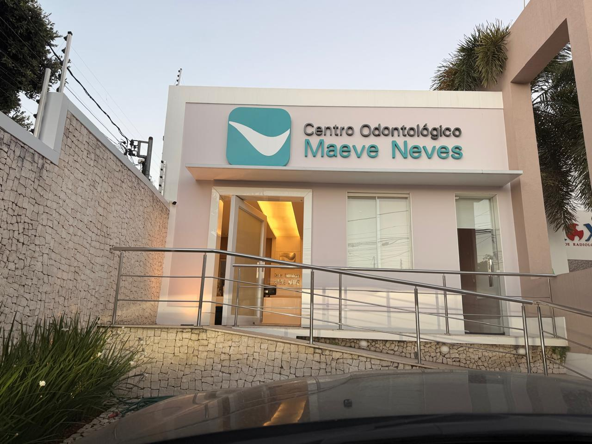
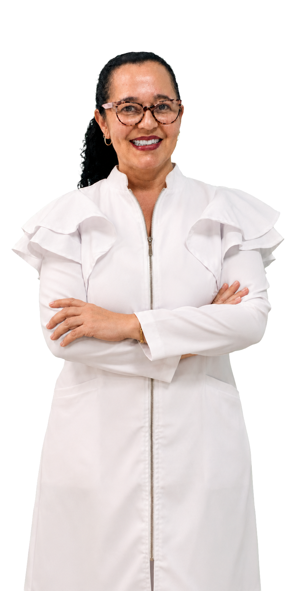
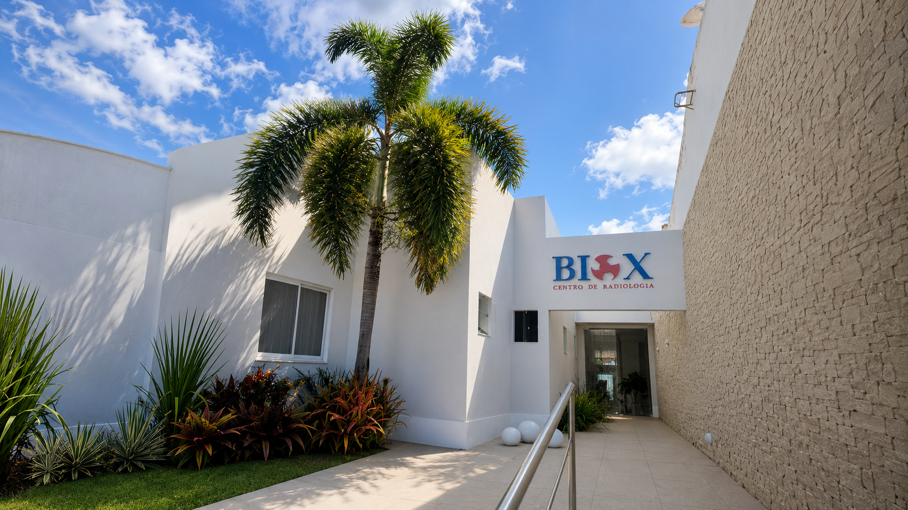
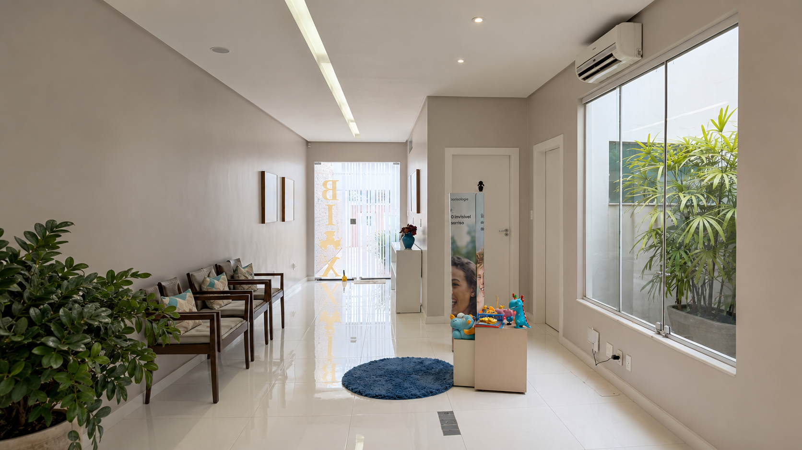
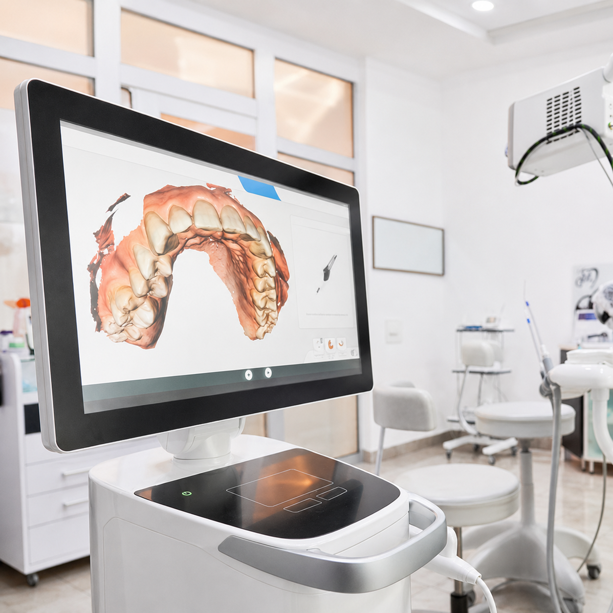
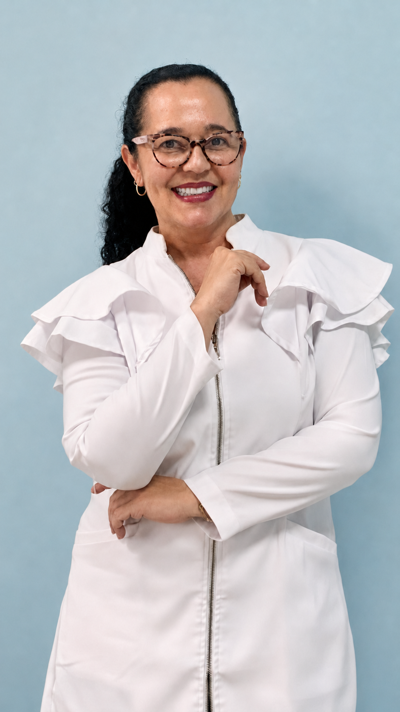

Ambiente acolhedor
Espaços planejados para transmitir conforto e tranquilidade desde a chegada.

Centro Odontológico Maeve Neves
Sobre nós
O Centro Odontológico Maeve Neves foi criado com o propósito de oferecer uma experiência diferente dos consultórios tradicionais. Desde o primeiro espaço, cada detalhe foi pensado para transmitir conforto, tranquilidade e a sensação acolhedora de estar em casa.
Das cores suaves à iluminação e à organização dos ambientes, tudo foi cuidadosamente planejado para tornar o atendimento mais leve para crianças, adolescentes e adultos. Um espaço onde cuidado odontológico, tecnologia e atendimento humanizado caminham juntos.
Espaços planejados para transmitir conforto e tranquilidade desde a chegada.
Um atendimento preparado para receber crianças, adolescentes e adultos.
Atendimento odontológico e suporte da BioX reunidos em um mesmo espaço.
Tecnologia, atenção e proximidade presentes em toda a experiência do paciente.

Tratamentos odontológicos
Da infância à vida adulta, cada tratamento é planejado de forma individualizada, unindo prevenção, função, estética e acompanhamento profissional.
Crescimento e prevenção
01Acompanhamento preventivo e interceptivo durante o desenvolvimento da criança, permitindo identificar alterações e orientar o crescimento do sorriso no momento adequado.
Por que escolher a Dra. Maeve
Graduada em Odontologia pela Unimar, a Dra. Maeve construiu sua trajetória com foco em Ortodontia e cuidado individualizado.
Acompanhamento para crianças e adolescentes, com foco no crescimento, desenvolvimento facial e prevenção.
Uma experiência leve, humana e tranquila, pensada para que cada paciente se sinta confortável.

Planejamentos voltados também para adultos, incluindo preparo para próteses, implantes e cirurgia ortognática.
Escaneamento digital, documentação e radiologia ajudam a tornar o planejamento mais preciso.
Quando necessário, o tratamento pode ser integrado com outros profissionais para um cuidado mais completo.
Centro de radiologia
Exames odontológicos com precisão, conforto e acolhimento
A BioX é a extensão radiológica do Centro Odontológico Maeve Neves, criada para oferecer mais praticidade, tecnologia e segurança no diagnóstico. Um espaço claro, leve e acolhedor, pensado para tornar a realização dos exames mais tranquila.
Agendar exame pelo WhatsApp




Tecnologia digital para registrar a arcada dentária com mais precisão, conforto e agilidade no planejamento odontológico.
Como funciona
Do primeiro contato ao acompanhamento do tratamento, cada etapa é conduzida com atenção, planejamento e acolhimento.
Seu atendimento começa de forma simples e prática pelo WhatsApp.
Conhecemos você, suas necessidades e seus objetivos.
Cada sorriso recebe um plano único.
Cuidado próximo durante toda a jornada.
Ambiente acolhedor
Cada detalhe do Centro Odontológico Maeve Neves foi planejado para transmitir conforto, tranquilidade e confiança. Um ambiente moderno, acolhedor e preparado para receber crianças, adolescentes e adultos com toda a atenção que merecem.
Conhecer o consultórioDúvidas frequentes
A avaliação ortodôntica pode ser realizada ainda na infância para acompanhar o crescimento facial, o desenvolvimento dos dentes e identificar precocemente possíveis alterações na mordida.
A ortodontia infantil atua durante o crescimento da criança, enquanto a ortodontia corretiva é responsável pelo alinhamento dos dentes e correção da mordida quando as alterações já estão estabelecidas.
Sim. Trabalhamos com alinhadores modernos, como Invisalign e Angel Aligner, proporcionando conforto, discrição e planejamento digital do tratamento.
A ortopedia facial atua no direcionamento do crescimento dos ossos da face e das estruturas relacionadas à mordida, principalmente durante a infância e adolescência.
A BioX realiza escaneamento digital com iTero, documentação ortodôntica, documentação fotográfica, radiografias intraorais, radiografias extraorais, modelos digitais e impressões para planejamento dos tratamentos.
Cada caso é avaliado individualmente. Quando necessário, os exames auxiliam no diagnóstico e tornam o planejamento mais preciso e seguro.
Sim. Muitos pacientes iniciam tratamentos ortodônticos na fase adulta, buscando melhorar função, estética e saúde bucal.
O agendamento é realizado pelo WhatsApp. Nossa equipe orienta sobre horários disponíveis e os próximos passos para iniciar seu atendimento.
Sim. A integração entre o Centro Odontológico Maeve Neves e a BioX permite que exames, diagnósticos e planejamento sejam realizados de forma mais prática e eficiente.
Em muitos casos, sim. Porém, a indicação depende da avaliação clínica e do planejamento individual de cada paciente.
